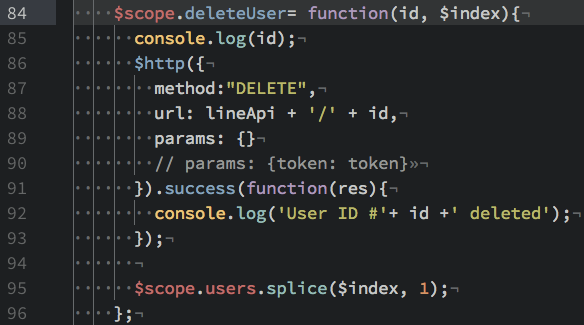
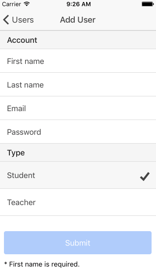
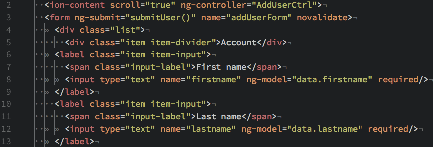
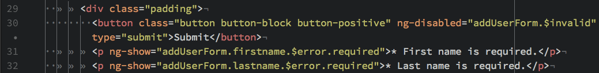

Edit Your Application
DeleteUser(id, $index)
We keep an index for each of the users in $index in our controller, so passing it to our delete function allows us to remove the associated DOM element after a successful DELETE request to the API (using splice). The rest should be self-explanatory:
Add User Form
As we saw in our users.html view, we are linking to an Add User view. Its form looks like this:
Looking at an excerpt from the HTML that makes this form, we note a few things:
We are calling a function called submitUser() on submit which is located in the AddUsrCtrl controller. Also, each of our inputs are defined with ng-model for use in the POST request.
Angular also allows us to have some easy form validation here, as the bottom of the add user template confirms:
We show errors beneath the form until the form has been properly validated by Angular (don't be confused by the novalidate in the form tag above - that disables the default HTML 5 validation so that Angular validation can work correctly).
How does the actual POST get sent? That is a little tricky and the subject of our next section.
Next